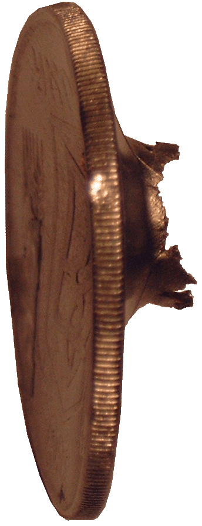
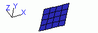
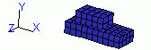
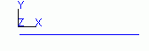

|
Pictures
|
Model Fembic Indata file
|
Description
|

|
Bullet_AKM.in |
A simple example of the destruction (bullet AKM).
 |

|
optimization.in |
A simple example of the topology optimization of structure.
If you are running some of the example problems supplied, you need to add
the path to the examples directory.
The syntax then becomes:
java -Xmx1000m -cp .;doc;bin;Impact.jar run.ImpactOpt steps=20 ignore.stress_i=35
examples/optimization.in |

|
optimization2.in |
A simple example of the topology optimization of structure.
If you are running some of the example problems supplied, you need to add
the path to the examples directory.
The syntax then becomes:
java -Xmx1000m -cp .;doc;bin;Impact.jar run.ImpactOpt steps=50 ignore.stress_i=35
examples/optimization2.in |

|
3.in |
A simple example of the destruction.
|

|
ball_in_contact.in
|
A simple example of the contact facilities in Impact.
|

|
balls_in_contact.in
|
A simple example of the contact facilities in Impact.
Two steel balls (shells) are in contact. |

|
contact_tria.in
|
This is a simulation of a couple of simple contact
elements. A number of triangular elements including contact elements are
falling down on a plate of contact elements. |

|
cylinder.in
|
Cylinder example.
|

|
failing_element.in
|
A simple example of the destruction.
|

|
impact_logo.in
|
This is an example of an indata file for the Impact
Finite Element Program. It is a simple mix of rod and solid elements which
are connected to each other. The model is fixed in the upper left corner
and is pulled by a constant force in the lower right corner. Sometimes this
combination can be tricky and need a firm hand on the timestep control. In
this case, it has been set to a fixed value. Autostep does not suffice. |

|
shells.in
|
A simple example of the contact facilities in Impact.
|

|
springboard.in
|
This is a model of a simple springboard consisting
of three elements through the thickness and 4 along. The Board is fixed rigidly
at one end and loaded in the other.
|

|
stamping.in
|
A simple example of the forming operations.
|

|
tracker.in
|
This is an example of a square profile subjected
to a vertical load in one end. If all goes well, this will initiate a buckling
of the profile. |

|
variable.in
|
It is a simple test of the variable constraint
function where the end node is controlled over time by the constraint input.
The constraint can be turned off by replacing the number with "off". Linear
interplation is assumed between the points. |

|
Ver_01.in
|
Impulsively loaded cantilever beam using C0 triangle shell
elements.
An elastic cantilever beam is held fixed in one end and loaded by a uniform
end along the length. The load is applied from the start and held constant
over time. |
 |
Ver_02.in
|
Impulsively loaded cantilever beam using Belytschko-Tsai
shell elements.
An elastic cantilever beam is held fixed in one end and loaded by a uniform
end along the length. The load is applied from the start and held constant
over time.
|

|
Ver_03.in
|
Mass Impacting Rod using Rod_2 elements.
An elastic rod is fixed in one end and then struck in the other end by a
moving mass. The mass is rigid and has an initial velocity of V0. The free
end of the rod has the same initial velocity which is at the instant of
impact. The relative motion of the mass and the rod end is the parameters
of interest here. The rod is modeled using 20 ROD_2 elements and a free
node representing the impacted mass. The contact is handled by Impact as
default, extending from the free end by a radius, the same as the rod cross
section radius. The timestep is reduced and fixed to prevent numerical instabilities.
Two trackers are used to print the nodal displacements into files for viewing. |

|
Ver_04.in
|
Simply Supported Plate Problem. A square plate is simply
supported on all four sides and subjected to a suddenly applied uniform
load. |

|
Ver_05.in
|
Impulsively loaded clamped beam. An aluminum beam which is
clamped at both ends is loaded impulsively over its central poortion. Due
to the symmetry of the geometry and loading, only a quarter of the beam
is modeled. 10 shell elements are used. The end nodes are fully constrained
apart from the nodes at the symmetry lines. Shell_BT_4 elements with 5 integration
points through the thickness are used.
|

|
Ver_06.in
|
The problem consists of two steel blocks in contact. They
slide relatve to each other. The top block is elastic while to bottom is
rigid. A special layer handles the contact sensitivity and friction The
lower surface of the block is fully constrained. The top block has a constant
force of 10E9 N applied at an angle alpha, equal to the angle of friction
of the contact surface. Both blocks are modeled using SOLID_6 elements and
use elastic materials. A rigid body connects all the nodes on the upper
block to enable a uniform velocity. The contact surface is enabled bu applying
CONTACT_TRIANGLE elements on the underside of the moving block. They also
ahndles the friction.
|

|
Ver_07.in
|
An elastic steel rod has the velocity of one of its ends
increased from 0 to 1 m/s at time zero and thereafter held constant. The
rod is otherwise unconstrained. One rod_2 element is used to model the rod.
The timestep is scaled by 0.05 to ensure that oscillation should not make
the solution unstable.
|

|
Ver_08.in
|
A pressure load is applied to a block of dimensions 1m x
1m x 1m. The load is applied at time 0 and then held constant for the rest
of the time. The block is modelled using a single Solid_Iso_6 element. Pressure
is applied at one side through the use of distributed node loads.
|

|
Ver_09.in
|
A spring is fixed in one end and is connected to a mass at
the other end. The mass has an inital velocity resulting in an oscillation.
No damping is applied in this problem.
|

|
Ver_10.in
|
A cylinder is subjected for a uniform pressure load which
is applied directly at the start and then held constant.
|

|
Ver_11.in
|
Three rods with length L make up a structure. The structure
is given an inital velocity V which sets the structure in rotation. The
rod elements are pinned to the ground, but have free rotation connections.
|

|
Ver_12.in
|
A 120 degree cylindrical panel is loaded impulsively over
a rectangular area. The initial velocity is radial in direction and a permanent
deformation occurs. Only half of the panel is modelled due to symmetry condition
along the axis of the cylinder. The loaded area is 10.205 in long and 3.08
in wide. It starts at the end of the cylinder and is centred so only half
the width is modelled.
|

|
Ver_13.in
|
Wave propagation in a bar. An undamped uniform steel bar
is loaded in the tip with a load that is held constant from the start. The
bar is initially at rest and is modelled by 40 rod elements of equal length.
The bar is only allowed to move in one direction making this a one dimensional
problem. The stress / time history of element 20 midpoint is read with a
tracker.
|